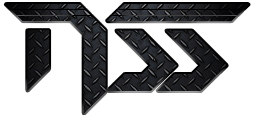

This page is still under construction.
In the meantime, you can still peruse what is currently available while additional content is populated here.
In the meantime, you can still peruse what is currently available while additional content is populated here.

The goal of NoShitSecurity, or NSS, was to foster community interaction, thus it was initially used to host the challenges and content created by community members in a very tight-knit group; and to this day, that content is still available if you know where to look. But there was always a deeper purpose for the mission: the cybersecurity skills gap. What I saw were people complaining about a lack of skilled candidates while standing in front of the door and demanding coin for entry, so I set out to challenge the top cybersecurity training firms in the industry to give their training away for free. Because if you really cared about solving a problem, you would start with open doors.
I developed a series of CTFs that started easy and gradually got more difficult, with the goal being to help newcomers better understand business concepts and technologies. As the players progressed, they were exposed to designs that embodied the principles found in the Core Concepts that drive the NSS mission. The goal was to create a self-governing community of infosec pros that knew how to architect in Azure, and build that out one team at a time. This became a working a proof of concept called the Triassic Trials.
Beginning in August 2020, I began dropping these CTF challenges unnanounced into The White Circle Discord server. A small group of people responded more than others to the CTFs. The members of the community that responded positively (and also seemed to enjoy the games) began to build trust with each other. Those whom bested the first active CTFs got a shot at being a Keyholder, which put login credentials for a fully configured enterprise Azure tenant directly into their hands as an expression of faith towards their responsibility.
These Keyholders were the first generation of students learning Azure security architecture from NSS. Listed below is the Keyholder's Agenda, and the hands-on skills they developed together.
 The same agenda that was first developed during the Triassic Trials pilot project became the foundation for the ASE Bootcamp provided to Keyholders during the Jurassic Jungle® Information Security Internship Program. This apprentice-style internship granted 6 months of full access to several leading enterprise platforms to deliver industry-recognized training and certification vouchers free of charge to NSS students.
The same agenda that was first developed during the Triassic Trials pilot project became the foundation for the ASE Bootcamp provided to Keyholders during the Jurassic Jungle® Information Security Internship Program. This apprentice-style internship granted 6 months of full access to several leading enterprise platforms to deliver industry-recognized training and certification vouchers free of charge to NSS students.
Over the years, the NSS Azure Security Engineering bootcamp evolved into a 6-month series of assignments that followed an established roadmap and gave students the opportunity to demonstrate what they had learned with projects and milestones that yielded tangible proofs in the form of industry-recognized cybersecurity certifications, Credly badges, and other forms of documentation that could be used to satisfy the experience requirements for ISC2 CISSP certification. Students would build a complete tenant and then defend it for 6 months.
The success of the Triassic Trials pilot project was enough to warrant the kind of invesment required to turn the idea into a working program. When money was no longer a barrier and the first roadmap was completed, we launched the Sincera's Pandora Discord server to provide a common area for Hopefuls and Keyholders to gather and collaborate. The Discord server shared the same name as the NSS website, and was heavily integrated across all aspects of the company, and is discussed in further detail on the Pandora page of this website. Our early seasons had a rough start, but Seasons 2 and 3 were very successful. We had thousands of applicants, but only three students completed the program. The rest either gave up and never made it in, or washed out before completing the program and were kicked from the server.
We issued many Credly badges to many Hopefuls, because you could earn a badge without being a Keyholder, which was a much more difficult achievement to earn. Due to the length of time required to produce a quality candidate with proper training under the legal definition of an internship, we could accommodate a maximum of 4 candidates in a single 6-month season. The NSS project in itself had a scheduled extinction date of September 16, 2025. Because I had previously established an "extinction date" or end of life when the project first began, I held true to that promise and helped as many students as were willing to put in the effort to succeed. In September of 2025 we closed our doors indefinitely, retaining all of our intellectual property, trademarks, and brand assets under the ownership of Sincera Labs.
Everything that was built remains preserved on the Sincera's Pandora website and Discord server. All of our partnerships are intact and now serve as a historical marker and a means to market the success of the NSS training initiative, holding true to the promise first made on the NSS About page in September of 2020, mere days after we had completed the Triassic Trials project. Of the three students that completed our program, and in concert with the point being to help you find a job, one got a job at Amazon as Offensive Security Engineer, and another now works as a Software Engineer II at Dell. The third is still searching for his foothold, and helps maintain the remaining NSS infrastructure.
What I've built here will remain as an example of what you can do if you try. Be something. Stand for something real. Something good. The rest will just fall into place naturally.
Shane